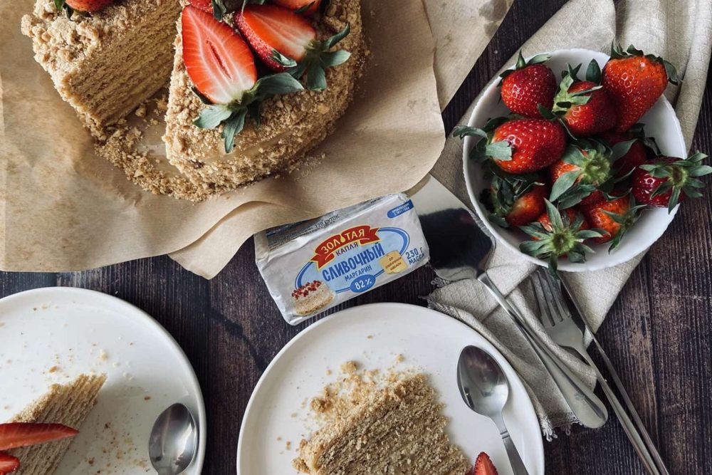

Приготовление
- Яйца, сахар, ваниль, маргарин и мёд смешайте и поставьте на водяную баню, пока ингредиенты не растворятся. Добавьте соду, постоянно помешивайте.
- Снимите с бани и постепенно добавляйте муку, пока тесто не станет вымешиваться.
- Хорошо замесите тесто на коврике и разрежьте на 7 частей.
- Каждую часть раскатайте в круг (по размеру тарелки) и выпекайте по очереди до золотого цвета.
- Крем: сварите сгущёнку, немного остудите и смешайте с мягким сливочным маслом.
- Смажьте каждый корж кремом. Обрезки измельчите и обсыпьте торт, сверху украсьте клубникой.